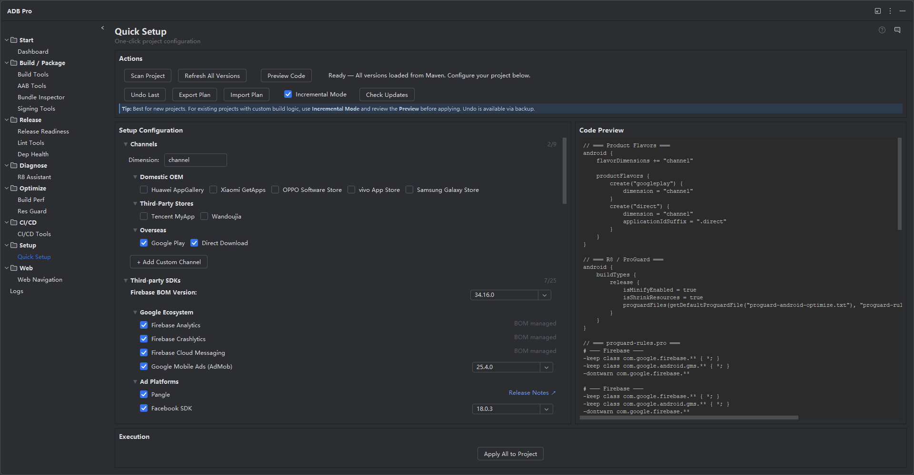

Configure your entire Android project in one click — product flavors, third-party SDKs, ProGuard rules, resource obfuscation, CI/CD pipelines, and build performance optimizations. Scan your project, select what you need, and let ADB Pro write all the Gradle configuration for you.

Quick Setup is the most powerful module in ADB Pro. It consolidates the work of multiple feature tabs — channels, SDKs, R8, Res Guard, CI/CD, and Build Performance — into a single guided workflow. Instead of manually editing build.gradle.kts files, proguard-rules.pro, libs.versions.toml, and CI/CD configs, you scan your project once, select the features you want, review a real-time code preview, and apply everything with one click.
The tool understands your project's existing configuration. It detects current flavors, dependencies, minify settings, AabResGuard configuration, and CI/CD setup. With Incremental Mode enabled, it skips already-configured items so you only add what's new. If anything goes wrong, the Undo Last button restores your project from an automatic backup.
Setting up an Android project with all the right configurations is tedious and error-prone. Here are the common pain points developers face:
build.gradle.kts, proguard-rules.pro, libs.versions.toml, gradle.properties). One syntax error breaks the entire build.Quick Setup starts by scanning your project. It detects existing product flavors, current dependencies, minifyEnabled and shrinkResources settings, AabResGuard configuration, CI/CD files, and Gradle performance settings. The scan results pre-populate each configuration section so you only see what's relevant to your project.
Configure product flavors for multi-channel distribution. Quick Setup includes a pre-defined channel pool grouped by category (app stores, regions, analytics platforms) and supports custom channel creation. You can set the flavor dimension name and pre-select channels based on scan results. Each channel generates the correct productFlavors block in your build.gradle.kts.
Add third-party SDKs with correct versions, ProGuard rules, and ResGuard whitelists — all in one step. The SDK pool is organized by category (Firebase, Analytics, Ads, UI, etc.) with live version fetching from Maven Central. Firebase libraries use BOM (Bill of Materials) unified version management. When you select an SDK, its associated R8 keep rules and ResGuard whitelist entries are automatically linked — no manual cross-referencing needed. The "Check Updates" button detects newer SDK versions across all selected libraries.
Configure code obfuscation without leaving the Quick Setup tab. Toggle minifyEnabled and shrinkResources, add the default ProGuard file, and review auto-linked R8 rules that sync with your SDK selections (22+ library rule definitions). The built-in reflection risk scanner analyzes your source code for patterns like Class.forName and getDeclaredMethod, flagging classes that need explicit keep rules. You can also enable obfuscation dictionaries from 11 Unicode confusable character presets, with directive checkboxes for -obfuscationdictionary, -classobfuscationdictionary, and -packageobfuscationdictionary.
Enable resource obfuscation with AabResGuard in a single toggle. Configure base whitelist rules (raw, drawable, mipmap, string, xml), SDK-linked whitelist rules for Firebase, Crashlytics, Notifications, Google Ads, and other third-party SDKs, and filter toggles for files and strings. The configuration is injected directly into your build.gradle.kts alongside the AabResGuard plugin declaration.
Select your CI/CD platform (GitHub Actions, GitLab CI, or Jenkins) with radio buttons. Quick Setup generates the complete pipeline configuration file using your project's detected build variants, signing configs, and SDK versions — the same output as the dedicated CI/CD Tools tab, but integrated into the one-click workflow.
After the project scan, Quick Setup presents actionable Gradle configuration recommendations from the GradleConfigAnalyzer. Each optimization is a checkbox — enable Gradle Daemon, parallel builds, build cache, JVM memory tuning, Kotlin incremental compilation, and configuration cache. Selected optimizations are written directly to gradle.properties.
As you select options in each section, the Code Preview panel updates in real time showing exactly what will be written to your build files. The preview covers: product flavors, R8/ProGuard config, proguard-rules.pro content, obfuscation dictionary directives, AabResGuard config, dependencies (with BOM), plugins, build performance optimizations, and CI/CD config. You can review every line before applying.
Click "Apply All to Project" to write all selected configurations to build.gradle.kts, proguard-rules.pro, gradle/libs.versions.toml, CI/CD config files, and gradle.properties in one operation. An automatic backup is created before any changes. The "Undo Last" button restores from backup instantly. You can also export your setup plan as JSON for reuse across projects, or import a previously saved plan.
| Section | Files Modified | Auto-Linked |
|---|---|---|
| Channels | build.gradle.kts | — |
| SDKs | build.gradle.kts, libs.versions.toml | R8 rules, ResGuard whitelist |
| R8 Obfuscation | build.gradle.kts, proguard-rules.pro | SDK-linked keep rules |
| Resource Obfuscation | build.gradle.kts | SDK-linked whitelist |
| CI/CD | .github/workflows/*.yml (or .gitlab-ci.yml, Jenkinsfile) | Signing config, variants |
| Build Performance | gradle.properties | — |
After applying your Quick Setup configuration, confirm everything works correctly:
gradle.properties).